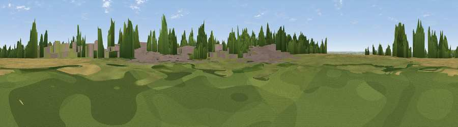

Viewpoint near Wellingore
#32585 in England · top 40% of its area beats it · near Wellingore · path 266 mWhere it is
The exact computed spot (SK 98461 57010). Click the marker for map links.
Public access: the nearest public right of way is about 266 m away — the final stretch may cross private land. Computed from Natural England's CRoW access layer and OpenStreetMap rights of way — not the legal definitive map. Always verify locally.
The view, rendered

A 360° render of this exact spot computed from the terrain model, tree cover and land cover — summer colours, afternoon light, calibrated against photographs of famous viewpoints. Real trees, hedges and buildings will differ in detail.
The panorama
Grey silhouette: terrain skyline in each direction (720 bearings, Earth curvature and refraction included). Dashed green: skyline with trees (+15 m) and buildings (+8 m) as obstacles. Blue strip: how far the ground is visible on each bearing.
Where the view opens
Wedge length = distance to the farthest visible ground on that bearing (vegetation-aware). Rings at 10, 25 and 50 km.
What fills the view
51% cropland · 23% grassland · 15% woodland · 11% built-up
Angular shares of the visible panorama (visual magnitude), not map area. Landscape diversity 0.53 (0–1 Shannon).
Key numbers
More beautiful places nearby
The staircase of upgrades: each row has a higher view potential than everything closer. Driving times are estimates from straight-line distance, calibrated against real road routing — check an actual route before setting out.
| Place | Direction | Drive | Score |
|---|---|---|---|
| Viewpoint near Wellingore | WSW · 1 km | ~2 min | 52.5 |
| Viewpoint near Lincoln | N · 15 km | ~27 min | 54.0 |
| Viewpoint near Burton-by-Lincoln | N · 19 km | ~32 min | 54.9 |
| Viewpoint near Great Gonerby | SSW · 19 km | ~33 min | 62.0 |
| Viewpoint near Belvoir | SW · 28 km | ~45 min | 70.8 |
| Viewpoint near Claxby | NNE · 41 km | ~60 min | 71.5 |
| Viewpoint near Woodhouse Eaves | SW · 63 km | ~86 min | 77.7 |
| Viewpoint near Mow Cop | W · 112 km | ~137 min | 78.9 |
53.10121, -0.53087 · source: osm peak · position refined by local search. Computed location — check access rights before visiting.